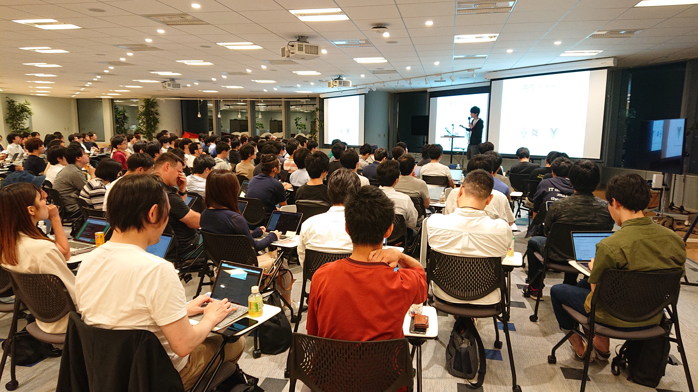

Vue.js Tokyo v-meetup 8 に登壇しました
Aug 30, 2018
2018年8月27日に開催された v-meetup #8 に登壇しました．
約150の募集枠は，募集開始数分で埋まるほどの人気イベント．v-meetup の参加は初めてだったのですが，スタッフを始め参加者の方々の熱気に圧倒されました．
Replace View of Backbone.js with Vue.js
2年半くらい運用していた Backbone.js SPA の一部を Vue.js でリニューアルしたときの話をしました．コアフレームワークが Backbone.Model に依存していて，Backbone.js から逃れられないプロジェクト，View 周りがツラいので組み合わせてみたら幸せになったという話です．どうしてもフルリプレイスが難しいプロジェクトとかで，小さく薄くはじめられるのが Vue.js のいいところ．2018年現在に使うのは色々ツラいところあるけど，Backbone.js 自体は嫌いではない(使いたいとは言っていない)

そもそもbackboneがつらい…#vuejs_meetup8
— ほんだし (@hondash918) August 28, 2018
backbone.js、繋ぎ先がhtmlである必要がないのでcocos2d-jsと組み合わせて使ったりしてた。今も結構好き。 #vuejs_meetup8
— hadakadenkyu (@hadakadenkyu) August 28, 2018
Vue コンポーネントの中で jQuery ライブラリ使うのあるある。 #vuejs_meetup8
— katashin (@ktsn) August 28, 2018
mountedでjqueryやるの親近感。#vuejs_meetup8
— Keima Kai (@keimakai1993) August 28, 2018
backboneとvueで共存キメラはすごい... #vuejs_meetup8
— イカID: Toshiwo (@toshiwo) August 28, 2018
サンプルプロジェクト
サンプルプロジェクトを地味にちゃんとつくった．Realm つかってみたくて，サーバのデータストアに Realm Node.js を使ってみました．yarn dev でローカル実行できます．